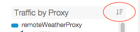

[toc]
The Proxy Performance dashboard helps you see API proxy traffic patterns and processing times. You can easily visualize how much traffic your APIs generate and how long it takes for API calls to be processed, from the time they are received by Apigee Edge until they are returned to the client app.
The Proxy Performance dashboard
This dashboard includes these charts:
| Metric | Description |
| Total Traffic | The total number of API requests received by Apigee Edge for an API environment in an organization. |
| Traffic Success | The total number of requests that resulted in a successful response. Error responses do not count. |
| Traffic Errors | The total number of all API requests that are unsuccessful, that is, the request does not deliver a response as desired by the end user. |
| Average TPS | The average number of API requests and resulting responses per second. |
See also this interesting article on the Apigee Community site: When can the Average Total Response Time be less than the Average Target Response Time?
| Metric | Description |
| Average Response Time |
The average of the Total Response Time measured for all API calls made to an Apigee Edge organization environment. The Total Response Time is the amount of time it takes for an API call to Edge to return (in milliseconds). Or, put another way, total response time is the time measured from when an entire API call is received on Apigee Edge to the time Edge begins sending a response back to the client app. This chart measures the average for all proxies. For individual proxies, see the Average Response Time by Proxy chart below. |
| Average Proxy Response Time |
This value is calculated as the average of the Total Response Time minus the Target Response Time for all API calls made to an Apigee Edge organization environment. It's basically a measure of how much time the API calls spend flowing through Apigee Edge itself (in milliseconds). |
| Average Target Response Time |
The average number of milliseconds that it takes from the point the last byte of a request is sent from Apigee Edge to a backend target to the time Edge receives the last byte of the response. It's basically measuring how much time the API call spends on the target system. |
| Metric | Description |
| <Proxy name> | For the specified API proxy, the number of recorded API requests and responses. |
| Metric | Description |
| <Proxy name> |
For the specified API proxy, the average of the Total Response Time measured for all API calls made to an Apigee Edge environment. The Total Response Time is the amount of time it takes for an API call to Edge to return (in milliseconds). Hover over the graph to see the total amount of time spent on the proxy side and the target side, as well as the average.
|
You can view metrics for all proxies or drill into specific proxies using the Proxy dimension dropdown menu at the top of the dashboard.
Click this icon to sort the selected metric:

This dashboard uses standard controls, like the date and data aggregation selectors, hovering over graphs for more context, click and drag to zoom, and so on. To learn more, see http://docs.apigee.com/node/15971.
See also this interesting article on the Apigee Community site: When can the Average Total Response Time be less than the Average Target Response Time?